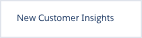

<div class="row monitor-height customize-the-action-bar">
  <div class="col-lg-12 monitor-height">
    <div class="row monitor-height">
      <hotspots-container>
        <wizard name="monitor" on-finish="finishedWizard()">
          <wz-step>
            <div class="step step-0">
            </div>
          </wz-step>
          <wz-step>
            <div class="step step-1">
              <div class="click-box active" ng-click="next()"></div>
            </div>
          </wz-step>
          <wz-step>
            <div class="step step-2">
              
              <div class="drop-box active" data-drop="true" jqyoui-droppable="{index: 1 , onDrop:'next'}"></div>
            </div>
          </wz-step>
          <wz-step>
            <div class="step step-3">
              <div class="click-box active" ng-click="next()"></div>
            </div>
          </wz-step>
          <wz-step success="true">
            <div class="step success">
              <li-center>
                <p>
                  
                </p>
                <h2>Nice Work!</h2>
                <p>
                  Now that you've gotten to look at Jeremy Jones' prospect profile in Pardot,<br/>
                  let's start working on your first Lead Nurturing campaign so you can keep in touch with him.
                </p>
                <p>
                  <a ui-sref="engagement-studio" li-autofocus="wizard.stateIndex == 3" class="btn btn-rounded active">Continue</a>
                </p>
              </li-center>
            </div>
          </wz-step>
        </wizard>
      </hotspots-container>
    </div>
  </div>
</div>
